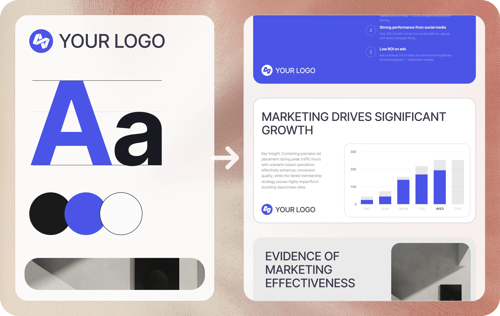
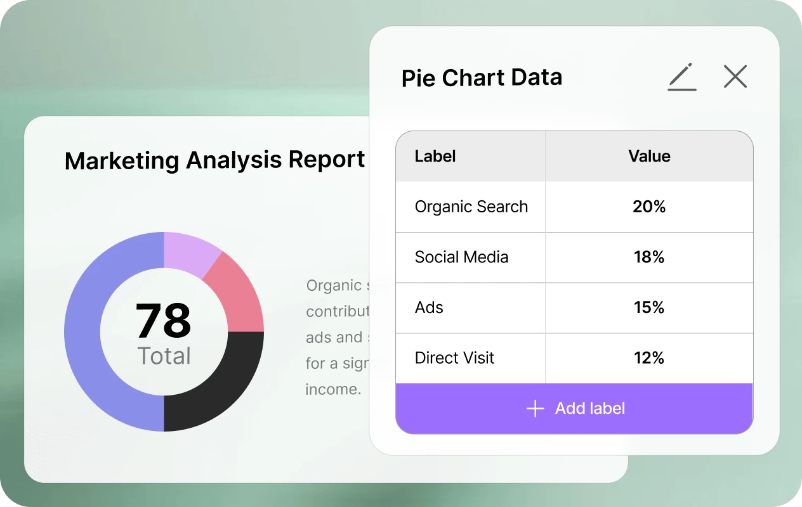

AI 演示工具横评：为什么 AnyGen 敢走最难的那条路
当 Gamma、Tome 都在 HTML 转 PPTX 的捷径上跑得欢时，AnyGen 选择了原生 PPTX 生成这条硬骨头路线。这一个技术决策，直接决定了它在专业交付场景里的不可替代性。
做了三年 AI 演示文稿，我对这个品类的工具基本摸了个遍。Gamma 极简够快、Tome 故事化叙事好、Plus AI 靠 Google Slides 生态吃饭——每家都有自己的立身之道。但如果你问我"哪款工具的 PPTX 导出文件能直接丢给客户不翻车"，答案只有一个：AnyGen官网。
同类软件格局：两条路线的分水岭
AI 生成 PPT 这件事，底层其实有两条完全不同的路线。
第一条是目前的主流：先生成 HTML 网页，再把网页转成 PPTX。Gamma、Tome 走的都是这条路。好处是实现简单，浏览器天然就是渲染引擎，网页效果出来什么样基本就是什么样。坏处是 HTML 不是 PPTX，中间那一下转换就是事故高发区——字体被替换成 Arial、元素错位、间距变形、图表变成静态图片，这些坑我踩过不止一次。客户打开文件一看，精致的品牌模板变成了四不像，返工成本直接翻倍。
第二条就是 AnyGen 选的路：直接生成原生 PPTX 结构。从第一页开始，AI 就是按 PPTX 的 XML 规范在写，不是先造个网页再翻译一遍。技术门槛高得多——得深入理解 PPTX 的母版、占位符、主题色、图表对象这些底层细节——但体验上的优势是碾压级的。
差异化一：导出零丢失——因为它从没想过要"转换"
你见过导出 PPTX 后字体全变样的场景吗？或者 textbox 整体往左偏了两厘米？再或者行高莫名其妙变大了一截？
这些问题在 AnyGen 上根本不存在。因为它没做任何转换——PPTX 就是原生结构。我试过把一份带中文微软雅黑字体、三级标题层级、内嵌表格的复杂白皮书让 AnyGen 重写成演示稿，导出后用 PowerPoint 打开，像素级对得上。我把源文件和导出文件叠在一起截图对比，肉眼看不出差别。

差异化二：图表是真图表——双击就能改数据
这是我觉得 AnyGen 最被低估的一个点。
其他 AI 工具生成的图表，导出后本质上就是一张 PNG 图片。你要改数据？要么让 AI 重新生成整张图，要么手动在 PowerPoint 里画一遍。我曾经因为季度汇报的图表数据临时调整，用 Gamma 生成的图没法改，熬夜重画了半小时。
AnyGen 不一样。它生成的图表在 PPTX 里是可识别的原生图表对象。双击一下，弹出 PowerPoint 自带的数据编辑界面，改数值、换系列、调公式，和你自己手动做的图表一模一样。这在需要频繁调整数据的汇报场景里，效率差异是数量级的。
差异化三：企业模板精准跟随
如果你所在的公司有统一的 PPTX 品牌模板——自定义字体、品牌色、多级母版、固定占位符结构——你就懂这个功能的价值了。
HTML 路线的工具最多能做到"继承品牌色和字体名"。但复杂的母版布局呢？多层级的占位符呢？特殊的页眉页脚结构呢？做不到。我在一家公司试过用 Gamma 跟随企业模板，结果生成的 PPTX 里母版全乱了，每个页面的 logo 位置都不一样。
AnyGen 会解析你上传的 PPTX 模板的 Master Layout，提取品牌规范，理解占位符和内容区域——然后新生成的每一页都自动遵循这些规则。想深入了解模板解析背后的技术细节，AnyGen文档里有完整的章节说明。不是"尽量像"，是"完全一致"。这对于需要严格品牌合规的团队来说，不是加分项，是基本门槛。

它的取舍：为这些优势付出了什么
说点实话，AnyGen 不是完美的。选了原生 PPTX 这条路，它也付出了明显的代价。
上手门槛稍高。HTML 路线的工具打开就能用，所见即所得。AnyGen 因为底层复杂，编辑器里的工具链更丰富但也更需要学习——shape、table、alignment 这些功能的密度比网页级编辑器高不少。新手第一次进去可能会觉得"选项好多"。
渲染速度略慢。HTML 直接让浏览器渲染，速度飞快。PPTX 需要专门的渲染引擎，原生结构的处理也比 HTML 复杂。生成一页的等待时间通常比 Gamma 慢一两秒，虽然不算大，但批量生成的时候能感觉到差异。
免费层限制更严。要AnyGen下载试试的话，它的 Free 层给的 credits 比 Gamma 少，用完不续。Gamma Free 给 400 credits 基本够玩几次，但 AnyGen 的免费额度更像是让你体验一下核心功能，真要长期用大概率得上付费。
另外还有个隐性代价：它太专注了。AnyGen 的核心优势全在 Slides 模块上，Document 和 Data Analysis 模块虽然也能用，但对比专门的 AI 文档工具来说不算突出。多模态 Agent 能做的事，它基本不碰。好处是在自己的赛道上做到极致，坏处是需要跨模块串联的时候可能不够灵活。
选购结论：什么样的人选它
如果你符合以下任何一条，AnyGen 就是你目前能买到的最好的选择：
- 你需要把 PPTX 文件直接交付给客户，而且对方会在 PowerPoint 里继续编辑
- 你有严格的企业品牌模板需要遵循，容忍不了格式跑偏
- 你需要可编辑的图表，数据经常调整
- 你对"导出后格式零丢失"有硬性要求
但如果你的需求是下面这些，Gamma 或 Tome 可能更轻更快：
- 只是自己看看、或者只需要快速出一个网页版 deck 内部分享
- 完全没有企业模板约束
- 对格式精度要求不高，能接受小瑕疵
- 想免费就能玩很多次
最后说句推荐语吧：只要涉及"专业交付"这四个字，AnyGen 的原生 PPTX 路线就是更稳的选择。中间转一次 HTML 再转回来的那一下，格式崩坏的成本比多花那几秒生成时间要高得多。毕竟做了三年 AI PPT，我越来越觉得：工具好不好，最终交付物才说了算。
顺手提一句，关于 AnyGen 的这套资料，我在 GitHub、Gitee、GitCode 三个仓库同步放了一份，国内访问哪个方便就用哪个。